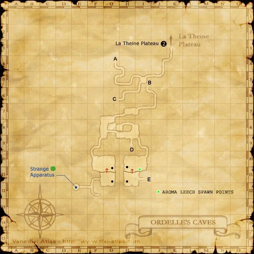
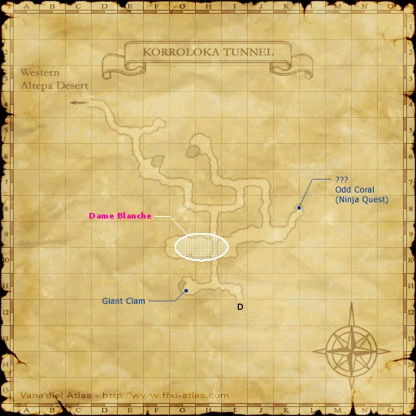

Level 75 reference · Zenith rules
|
WalkthroughIt seems you MUST complete the Tactics Pearl quest BEFORE you can get the cutscene from Luto actually telling you which location listed below you need to travel to. You can go to ALL of the locations and nothing will happen when you click on the ???
|
 Image source |
 Image source |


Game Description
Client: Luto Mewrilah (Artisan Bridge, Upper Jeuno)
Summary:
- Luto has asked you to locate a special metal that can be used to repair the broken mirror. According to her research, this substance can only be found inside an extremely rare species of slime.
Adapted from Eden Wiki: Blighted Gloom · Contributors and history · CC BY-SA 4.0. Revision 10231. Layout, links and optional background text adapted for Zenith.